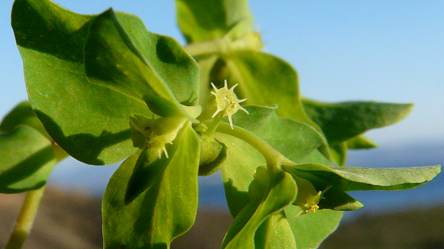
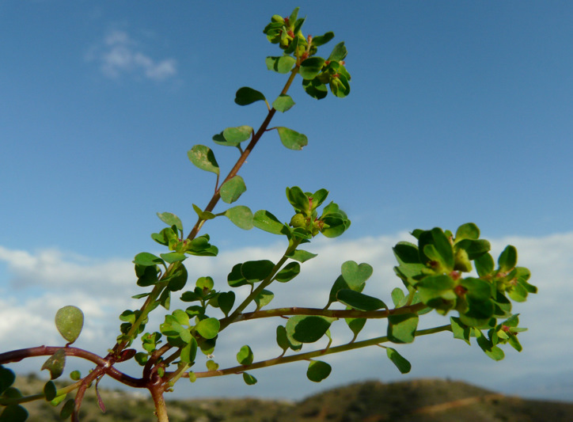
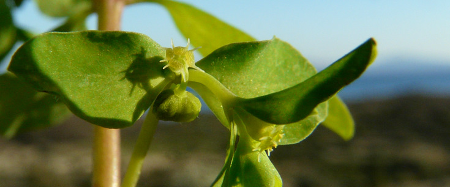
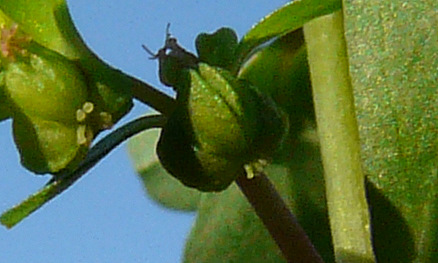
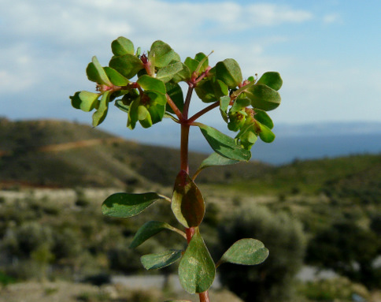
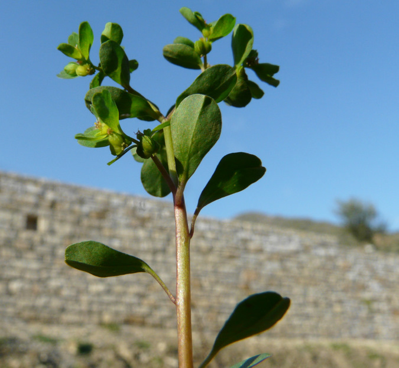

| PHRYGANA | Fauna | Flora | Galles | liste des espèces |
contact -
info - commentaires phrygana1 (at) gmail.com |
| Particularités crétoises | nouveautés | Mines | ressources naturelles |
| Euphorbia peplus L. |
| 232 | Flora | EUPHORBIACEAE | Euphorbia L. |
 Euphorbia peplus Melambes (Agios Giorgos) 15 janvier 2011 |
| en: Petty spurge fr: l’Euphorbe des jardins nl: Tuinwolfsmelk de: Gartenwolfsmilch | |
| Plante à racine pivotante | |
| Feuilles: minces, éparses, obovales, obtues ou émarginées, entières, atténuées en pétiole; feuilles ombellaires sessiles | |
| Tige: dressée, rameuse dès la base, parfois rougeâtre | |
| Fleurs: groupées en une ombelle (3 rayons), 1-4 bifurques; bractées ovales, apiculées, entières, obliques à la base; glandes en croissant, avec des cornes linéaires | |
| Fruit: capsule petite, glabre lisse, à coques munies de deux carènes ailées; graines (1/2 mm), gris perle, avec sur les faces des cavités (fossettes) en ligne; caroncule arrondie | |
| Hauteur: 10 - 40 cm | Type biologique: thérophyte ramifié |
| Floraison: décembre janvier février mars avril | |
| Altitudes: 0 - 1300 m | |
| Statut en Crète: indigène - native | |
| Biotopes en Crète: terrains vagues, jardins, parcs, bords de chemins, vignobles, olivaies, champs cultivés | |
| Distribution: région Méditerranéenne | |
| Note: espèce héliophile. | |
|
 Euphorbia peplus Melambes (Agios Giorgos) 09 février 2011 |
|
 Euphorbia peplus Melambes (Agios Giorgos) 15 janvier 2011 |
|

 Euphorbia peplus Melambes (Agios Giorgos) 09 février 2011 |
|
 Euphorbia peplus Melambes (Agios Giorgos) 09 février 2011 |
| 14 septembre 2012 |
| © paul fontaine -- © Phrygana.eu 2007 -- 2013 |